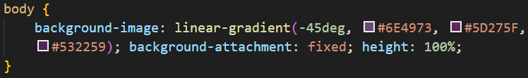
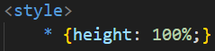

Degradê
Como fazer um degradê:
- Na tag que será personalizada, crie o estilo background-image: linear-gradient();

-
-45deg = ângulo do gradiente. Também pode ser definido escrevendo uma direção, como por exemplo: to right.
-
Seguido de vírgulas, são inserdas as cores. Podem ser adicionadas várias cores.
-
Depois do linear-gradient(#);, podemos inserir o background-attachment: #; com o valor de fixed, para que o elemento não se mova com a barra de rolagem.
-
O elemento pode ficar repartido em segmentos, para eliminar isso adicionamos o height: #; com o valor de 100%.
-
Podemos configurar o tamanho que uma cor parte do degradê ocupa na tela, basta colocar um valor de % após o código hexadecimal.
-
Para substituir o degradê linear por um radial, basta mudar o estilo de linear-gradient(#); para radial-gradient(#);.
Configurações globais
Para inserir uma configuração global no seu estilo CSS basta criar um estilo *, e essa configuração de estilo se aplicará a todos os elementos da página.
